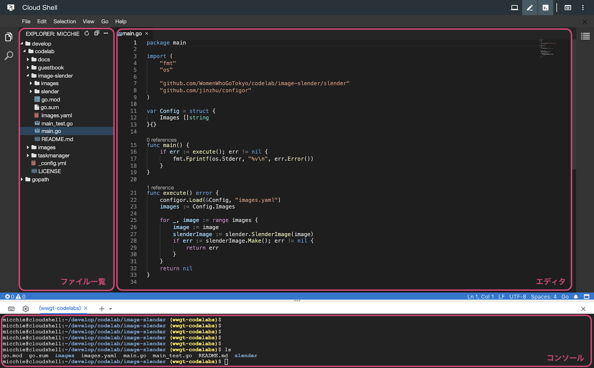

Google Cloud Shell とは
Google Cloud Shell はブラウザ上で動作して、 Google Cloud Platform 上のサービスにアクセス、操作することができるシェルです。
あらかじめ Go の環境が準備されているため、すぐに Go のプログラムを書くことができます。
下記のURLにアクセスします。
https://console.cloud.google.com/?hl=ja
Google Cloud Console をはじめて利用される方には、以下の規約同意画面が表示されます。
選択肢は「はい」を選択し、「同意して続行」をクリックしてください。
「プロジェクトの選択」をクリックします。

プロジェクトを選択する画面が表示されます。
利用するプロジェクトを選択して「開く」をクリックしましょう。

Google Cloud Shell で Go のプログラムを取得するときは、コンソールを利用します。
「Cloud Shell をアクティブにする」ボタンを押下します。

コンソールが立ち上がります。
異なるプロジェクトに切り替えたいときは、利用するプロジェクトの ID を設定しましょう。
$ gcloud config set project {プロジェクトID}ホームディレクトリ直下には、gopath ディレクトリがあります。
$ cd ~ && ls上記のコマンドで確認することができます。
プログラムを配置する場所は自由に設定できます。(ここでは develop ディレクトリを作成して、そこに Go のプログラムを取得します)
$ mkdir develop && cd developコンソールで Go のプログラムを取得するコマンドを入力します。
$ git clone https://github.com/WomenWhoGoTokyo/codelab.git「コードエディタの起動」ボタンを押下します。

エディタが起動します。

左側がファイルの一覧、右側がエディタです。
それでは、はじめましょう！